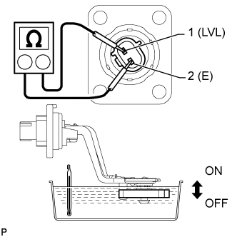

ДАТЧИК УРОВНЯ МАСЛА > ПРОВЕРКА |
| 1. ПРОВЕРЬТЕ ДАТЧИК УРОВНЯ МОТОРНОГО МАСЛА |
|  |
Опустите часть датчика в емкость с маслом и нагрейте ее.
Измерьте сопротивление в соответствии со значениями, приведенными в таблице ниже.
| Контакты для подключения диагностического прибора | Состояние | Заданные условия |
| 1 (LVL) - 2 (E) | ON (ВКЛ), 20°C (68°F) | Менее 1 Ом |
| OFF (ВЫКЛ), 20°C (68°F) | Менее 1 Ом | |
| ON (ВКЛ), 60°C (140°F) | Менее 1 Ом | |
| OFF (ВЫКЛ), 60°C (140°F) | 10 кОм или более |